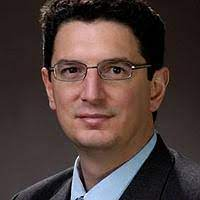

Workshop on Trustworthy Autonomous
Systems Engineering 2022
Systems Engineering 2022
February 22, 2022
Co-located with AAAI 2022, Vancouver, Canada
Co-located with AAAI 2022, Vancouver, Canada
| Home | Call for Papers | Keynotes | Program | Organization |
|  | George Pappas, UPS Foundation Professor and Chair, Electrical and Systems Engineering, University of PennsylvaniaDr. George Pappas is the UPS Foundation Professor and Chair of the Department of Electrical and Systems Engineering at the University of Pennsylvania. He also holds a secondary appointment in the Departments of Computer and Information Sciences, and Mechanical Engineering and Applied Mechanics. He is member of the GRASP Lab and the PRECISE Center. He has previously served as the Deputy Dean for Research in the School of Engineering and Applied Science. His research focuses on control theory and in particular, hybrid systems, embedded systems, hierarchical and distributed control systems, with applications to unmanned aerial vehicles, distributed robotics, green buildings, and biomolecular networks. He is a Fellow of IEEE, and has received various awards such as the Antonio Ruberti Young Researcher Prize, the George S. Axelby Award, the O. Hugo Schuck Best Paper Award, the National Science Foundation PECASE, and the George H. Heilmeier Faculty Excellence Award. |
 |
Ben Zhao, Neubauer Professor of Computer Science, University of Chicago.Dr. Ben Zhao is Neubauer Professor of Computer Science at University of Chicago. Prior to joining UChicago,he held the position of Professor of Computer Science at UC Santa Barbara. He completed his Ph.D. at U.C. Berkeley (2004), and B.S. from Yale (1997). He is an ACM distinguished scientist, and a recipient of the NSF CAREER award, MIT Technology Review's TR-35 Award (Young Innovators Under 35), ComputerWorld Magazine's Top 40 Technology Innovators award, IEEE ITC Early Career Award, and Google Faculty awards. His work has been covered by media outlets such as New York Times, Boston Globe, LA Times, MIT Tech Review, Wall Street Journal, Forbes, Fortune, CNBC, MSNBC, New Scientist, and Slashdot. He has published over 170 articles in areas of security and privacy, machine learning, networking, and HCI (H-index 71). He served as TPC (co-)chair for the World Wide Web conference (WWW 2016) and ACM Internet Measurement Conference (IMC 2018). He also serves on the steering committee for HotNets, and was general co-chair for HotNets 2020. |
| © AAAI 2022 |